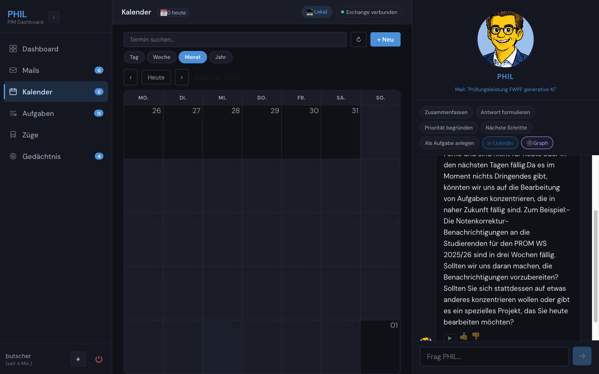

Phil 2026
Today, the technology
finally caught up.
Phil is a working personal information manager — not a concept video. It manages email, calendar, tasks and knowledge using today's AI tools. It does not do everything Apple envisioned. It does what matters most, right now.
Problem: An overflowing inbox with no sense of priority wastes hours every day. Solution: Phil reads every message and categorises it — VIP / Action Required / FYI / Noise — with a 2-sentence summary and concrete next step. Local LLM or cloud: your choice.
Problem: Mail, calendar and tasks live in separate apps — you have to assemble your own picture of the day. Solution: One screen shows unread mail counts by category, today's events, pending tasks, and communication analytics — a genuine daily briefing.
Problem: Calendar apps answer clicks, not questions. Solution: Ask in plain language — "What's next week?" or "When is the faculty meeting?" Phil fetches context across a full year of events and answers directly, without hallucinating dates or times.
Problem: Walking into a meeting cold — not knowing who's attending or what was discussed before. Solution: Phil identifies participants from a calendar event, retrieves related emails via semantic search, and drafts a structured briefing: attendees, relevant messages, agenda suggestion.
Problem: Every chat session starts from zero — the assistant knows nothing about you. Solution: Phil remembers facts across sessions in SQLite and ChromaDB. Thumbs up/down feedback refines what it retains. All stored facts are visible, editable, and deletable.
Problem: Keyword search fails when you remember meaning but not exact words. Solution: Emails and PDF/DOCX attachments are embedded as vectors in ChromaDB. Phil retrieves semantically similar correspondence even when no keyword matches — finding what you meant, not just what you typed.
Problem: Vector search finds similar text but misses structural relationships — who supervises whom, which project links to which deadline. Solution: A local OWL/RDF graph models entities and relationships from emails. SPARQL queries surface connections that embeddings alone cannot see.
Problem: Planning a business trip means switching between calendar, the DB website, and email — all manually. Solution: Phil's Reiseplanung view queries Deutsche Bahn connections via PyHafas, shows departure times and platform info, and flags calendar conflicts. Booking and pricing remain on DB.de — HAFAS provides schedules only.
Problem: Action items hidden inside emails get forgotten — there is no automatic bridge from information to task. Solution: Phil extracts action items from emails and calendar events, creates trackable tasks, and monitors completion — closing the loop from incoming message to resolved action.
Problem: Your email contacts and your professional network live in separate silos. Solution: Phil links email correspondents to their LinkedIn profiles, enriching your contact graph with job titles, mutual connections, and professional context — so every conversation has background.
Problem: Reading briefings at your desk ties you to a screen. Solution: Phil reads out briefings and responses via the OpenAI TTS API — high-quality, natural-sounding voice, streamed directly to the browser. Useful while commuting or getting ready.
Problem: Corporate mailboxes are locked behind Microsoft Exchange — most AI tools only support Gmail. Solution: Phil connects to Exchange via EWS using exchangelib, supporting both corporate Exchange Server and Microsoft 365 with automatic OAuth or basic auth.



Click any screenshot to enlarge · ← → keys to navigate